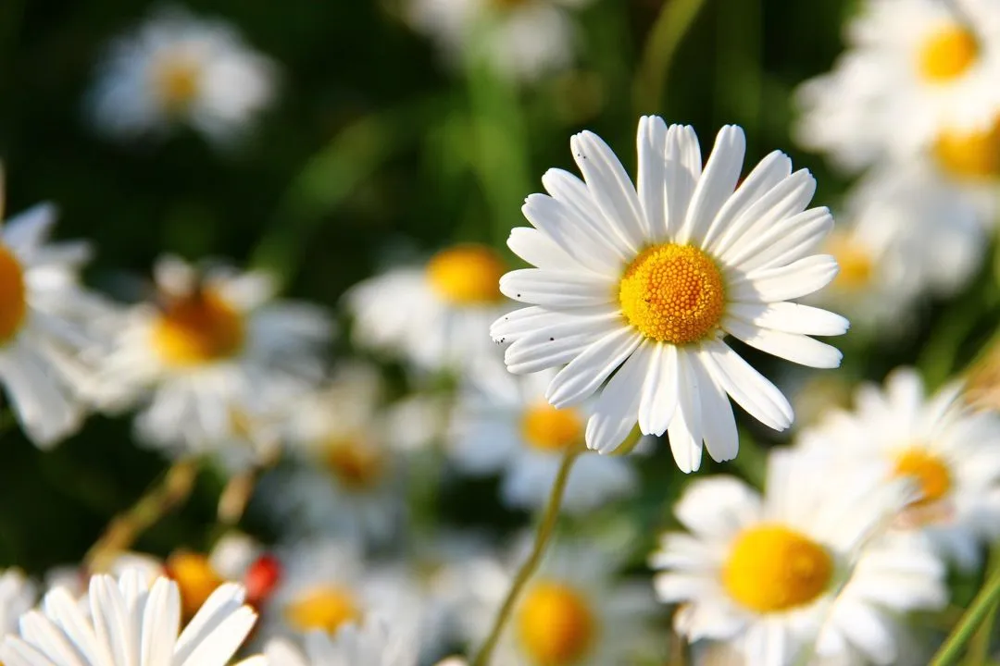

Bunga Aster

Bunga Aster: Simbol Cinta, Kesabaran, dan Keanggunan Abadi
Bunga aster adalah bunga menawan berbentuk seperti bintang kecil yang terkenal karena warnanya yang cerah dan mekarnya yang tahan lama. Aster sering digunakan dalam rangkaian bunga dan taman hias karena keindahannya yang sederhana namun memikat.
Fakta Singkat Bunga Aster
- Nama Ilmiah : Aster spp.
- Famili : Asteraceae (keluarga bunga matahari dan daisy)
- Asal : Amerika Utara, Eropa, dan Asia
- Masa Mekar : Akhir musim panas hingga musim gugur (Agustus–Oktober)
- Tinggi Tanaman : 30 cm – 120 cm tergantung varietas
- Warna : Ungu, putih, merah muda, biru, dan ungu muda
Ciri-Ciri Bunga Aster
- Bunga : Seperti matahari kecil dengan banyak kelopak tipis dan bundar di bagian tengah
- Tangkai : Ramping dan bercabang
- Aroma :Lembut dan ringan, menarik lebah serta kupu-kupu
- Daun : Kecil, tipis, dan memanjang
Asal Usul dan Persebaran
- Nama “aster” berasal dari bahasa Yunani yang berarti “bintang,” merujuk pada bentuk bunganya
- Tumbuh secara alami di wilayah beriklim sedang di:
- Amerika Utara (terutama AS dan Kanada)
- Eropa
- Asia Timur (seperti Tiongkok dan Jepang)
Jenis-Jenis Aster yang Populer
- Aster Novae-angliae (New England Aster), Warna ungu cerah, tinggi, cocok untuk taman besar
- Aster alpinus (Alpine Aster), Tumbuh rendah, cocok untuk pot atau taman bebatuan
- Aster ericoides (Heath Aster), Berbunga kecil, tumbuh rimbun seperti semak
- Aster novi-belgii (New York Aster), Berbunga padat dan warna bervariasi
Aster dalam Dunia Taman dan Florikultura
- Sering digunakan sebagai bunga potong dalam buket
- Cocok sebagai tanaman border taman atau hiasan pot gantung
- Menarik lebah dan kupu-kupu, mendukung ekosistem taman
Makna Simbolis Bunga Aster
- Cinta dan kesabaran
- Harapan dan kedamaian
- Kesetiaan dan keanggunan
- Di era kuno, aster dipercaya dapat mengusir roh jahat dan membawa keberuntungan
Fakta Menarik
- Bunga kelahiran bulan September
- Simbol Hari Grandparents Day di beberapa negara
- Tahan lama setelah dipotong—ideal untuk dekorasi rumah
Bunga aster adalah contoh sempurna dari keindahan yang sederhana dan kuat. Dengan ragam warnanya yang memikat dan makna mendalam, aster tak hanya mempercantik taman tetapi juga menghangatkan hati.